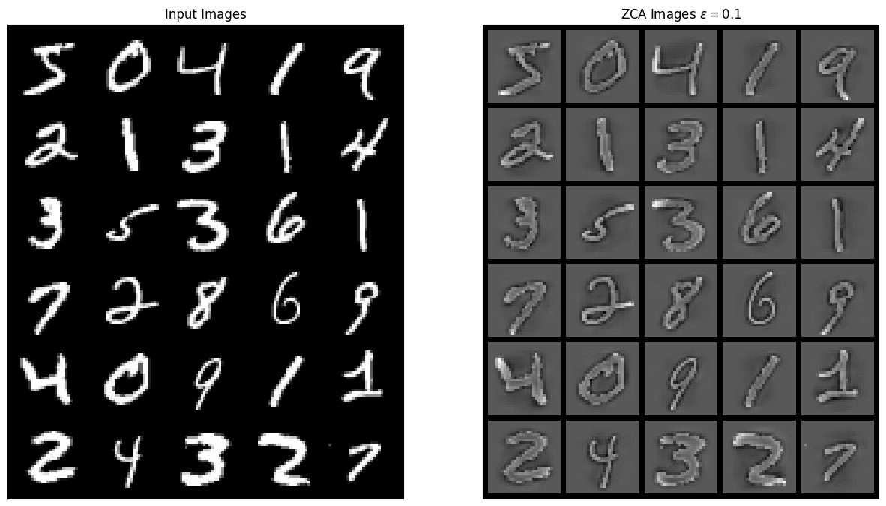
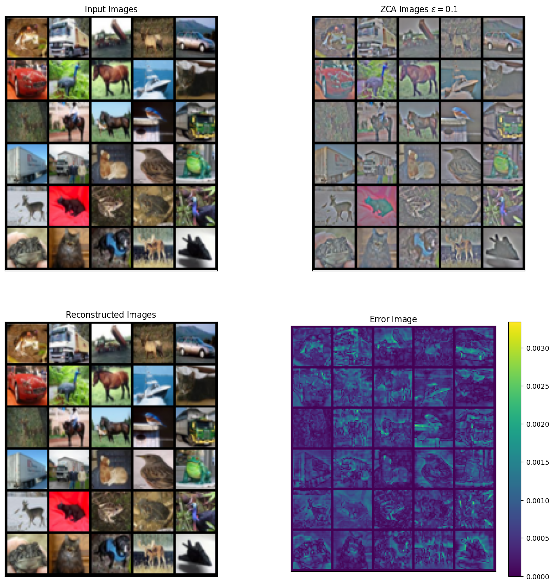
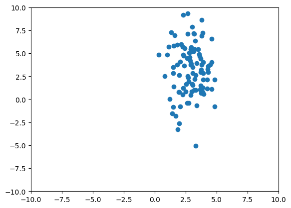
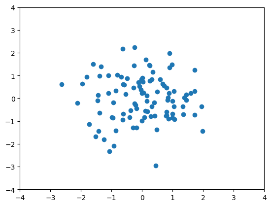

%%capture
!pip install kornia numpy matplotlibZCA Whitening
Advanced
kornia.enhance
The following tutorial will show you how to perform ZCA data whitening on a dataset using
kornia.enhance.zca. The documentation for ZCA whitening can be found here.

Install necessary packages
# Import required libraries
import kornia as K
import matplotlib.pyplot as plt
import numpy as np
import torch
from torchvision import datasets, transforms
from torchvision.utils import make_grid# Select runtime device
device = torch.device("cuda:0" if torch.cuda.is_available() else "cpu")
print(f"Using {device}")Using cuda:0ZCA on MNIST
Download and load the MNIST dataset.
%%capture
dataset = datasets.MNIST("./data/mnist", train=True, download=True, transform=transforms.Compose([transforms.ToTensor()]))Stack whole dataset in order to fit ZCA on whole dataset.
images = []
for i in range(len(dataset)):
im, _ = dataset[i]
images.append(im)
images = torch.stack(images, dim=0).to(device)Create an ZCA object and fit the transformation in the forward pass. Setting include_fit is necessary if you need to include the ZCA fitting processing the backwards pass.
zca = K.enhance.ZCAWhitening(eps=0.1)
images_zca = zca(images, include_fit=True)The result shown should enhance the edges of the MNIST digits because the regularization parameter \(\epsilon\) increases the importance of the higher frequencies which typically correspond to the lowest eigenvalues in ZCA. The result looks similar to the demo from the Stanford ZCA tutorial
grid_im = make_grid(images[0:30], nrow=5, normalize=True).cpu().numpy()
grid_zca = make_grid(images_zca[0:30], nrow=5, normalize=True).cpu().numpy()
plt.figure(figsize=(15, 15))
plt.subplot(1, 2, 1)
plt.imshow(np.transpose(grid_im, [1, 2, 0]))
plt.title("Input Images")
plt.xticks([])
plt.yticks([])
plt.subplot(1, 2, 2)
plt.imshow(np.transpose(grid_zca, [1, 2, 0]))
plt.title(r"ZCA Images $\epsilon = 0.1$")
plt.xticks([])
plt.yticks([])
plt.show()
ZCA on CIFAR-10
In the next example, we explore using ZCA on the CIFAR 10 dataset, which is a dataset of color images (e.g 4-D tensor \([B, C, H, W]\)). In the cell below, we prepare the dataset.
%%capture
dataset = datasets.CIFAR10("./data/cifar", train=True, download=True, transform=transforms.Compose([transforms.ToTensor()]))
images = []
for i in range(len(dataset)):
im, _ = dataset[i]
images.append(im)
images = torch.stack(images, dim=0).to(device)We show another way to fit the ZCA transform using the fit method useful when ZCA is included in data augumentation pipelines. Also if compute_inv = True, this enables the computation of inverse ZCA transform in case a reconstruction is required.
zca = K.enhance.ZCAWhitening(eps=0.1, compute_inv=True)
zca.fit(images)
zca_images = zca(images)
image_re = zca.inverse_transform(zca_images)Note how the higher frequency details are more present in the ZCA normalized images for CIFAR-10 dataset.
grid_im = make_grid(images[0:30], nrow=5, normalize=True).cpu().numpy()
grid_zca = make_grid(zca_images[0:30], nrow=5, normalize=True).cpu().numpy()
grid_re = make_grid(image_re[0:30], nrow=5, normalize=True).cpu().numpy()
err_grid = grid_re - grid_im # Compute error image
plt.figure(figsize=(15, 15))
plt.subplot(2, 2, 1)
plt.imshow(np.transpose(grid_im, [1, 2, 0]))
plt.title("Input Images")
plt.xticks([])
plt.yticks([])
plt.subplot(2, 2, 2)
plt.imshow(np.transpose(grid_zca, [1, 2, 0]))
plt.title(r"ZCA Images $\epsilon = 0.1$")
plt.xticks([])
plt.yticks([])
plt.subplot(2, 2, 3)
plt.imshow(np.transpose(grid_re, [1, 2, 0]))
plt.title(r"Reconstructed Images")
plt.xticks([])
plt.yticks([])
plt.subplot(2, 2, 4)
plt.imshow(np.sum(abs(np.transpose(err_grid, [1, 2, 0])), axis=-1))
plt.colorbar()
plt.title("Error Image")
plt.xticks([])
plt.yticks([])
plt.show()
Differentiability of ZCA
We will as simple Gaussian dataset with a mean (3,3) and a diagonal covariance of 1 and 9 to explore the differentiability of ZCA.
num_data = 100 # Number of points in the dataset
torch.manual_seed(1234)
x = torch.cat([torch.randn((num_data, 1), requires_grad=True), 3 * torch.randn((num_data, 1), requires_grad=True)], dim=1) + 3
plt.scatter(x.detach().numpy()[:, 0], x.detach().numpy()[:, 1])
plt.xlim([-10, 10])
plt.ylim([-10, 10])
plt.show()
Here we explore the affect of the detach_transform option when computing the backwards pass.
zca_detach = K.enhance.ZCAWhitening(eps=1e-6, detach_transforms=True)
zca_grad = K.enhance.ZCAWhitening(eps=1e-6, detach_transforms=False)As a sanity check, the Jacobian between the input and output of the ZCA transform should be same for all data points in the detached case since the transform acts as linear transform (e.g \(T(X-\mu)\)). In the non-detached case, the Jacobian should vary across datapoints since the input affects the computation of the ZCA transformation matrix (e.g. \(T(X)(X-\mu(X))\)). As the number of samples increases, the Jacobians in the detached and non-detached cases should be roughly the same since the influence of a single datapoint decreases. You can test this by changing num_data . Also note that include_fit=True is included in the forward pass since creation of the transform matrix needs to be included in the forward pass in order to correctly compute the backwards pass.
import torch.autograd as autograd
J = autograd.functional.jacobian(lambda x: zca_detach(x, include_fit=True), x)
num_disp = 5
print(f"Jacobian matrices detached for the first {num_disp} points")
for i in range(num_disp):
print(J[i, :, i, :])
print("\n")
J = autograd.functional.jacobian(lambda x: zca_grad(x, include_fit=True), x)
print(f"Jacobian matrices attached for the first {num_disp} points")
for i in range(num_disp):
print(J[i, :, i, :])Jacobian matrices detached for the first 5 points
tensor([[ 1.0177, -0.0018],
[-0.0018, 0.3618]])
tensor([[ 1.0177, -0.0018],
[-0.0018, 0.3618]])
tensor([[ 1.0177, -0.0018],
[-0.0018, 0.3618]])
tensor([[ 1.0177, -0.0018],
[-0.0018, 0.3618]])
tensor([[ 1.0177, -0.0018],
[-0.0018, 0.3618]])
Jacobian matrices attached for the first 5 points
tensor([[ 1.0003, -0.0018],
[-0.0018, 0.3547]])
tensor([[ 1.0006, -0.0027],
[-0.0027, 0.3555]])
tensor([[ 0.9911, -0.0028],
[-0.0028, 0.3506]])
tensor([[9.9281e-01, 4.4671e-04],
[4.4671e-04, 3.5368e-01]])
tensor([[ 1.0072, -0.0019],
[-0.0019, 0.3581]])Lastly, we plot the ZCA whitened data. Note that setting the include_fit to True stores the resulting transformations for future use.
x_zca = zca_detach(x).detach().numpy()
plt.scatter(x_zca[:, 0], x_zca[:, 1])
plt.ylim([-4, 4])
plt.xlim([-4, 4])
plt.show()